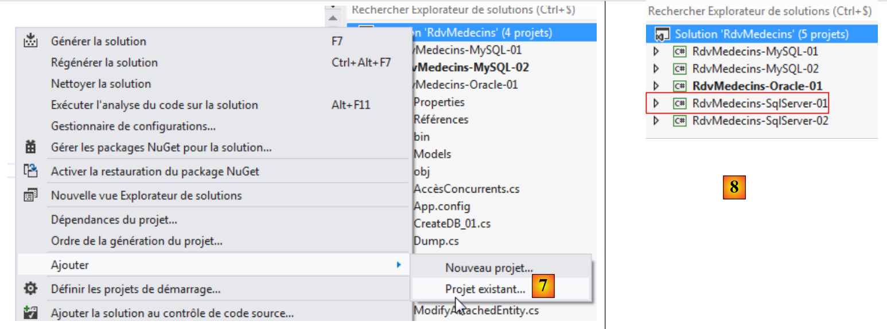
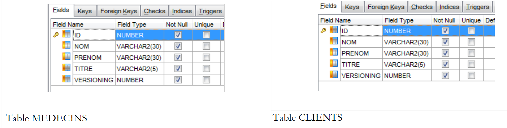

5. دراسة حالة مع Oracle Database Express Edition 11g الإصدار 2
5.1. تثبيت الأدوات
الأدوات التي سيتم تثبيتها هي كما يلي:
- نظام إدارة قواعد البيانات (DBMS): [http://www.oracle.com/technetwork/products/express-edition/downloads/index.html]؛
- أداة إدارة: EMS SQL Manager for Oracle Freeware [http://www.sqlmanager.net/fr/products/oracle/manager/download]؛
- عميل Oracle لـ .NET: ODAC 11.2 الإصدار 5 (11.2.0.3.20) مع Oracle Developer Tools لـ Visual Studio: [http://www.oracle.com/technetwork/developer-tools/visual-studio/downloads/index.html].
في الأمثلة التالية، يكون للمستخدم "system" كلمة مرور "system".
قم بتشغيل Oracle [1] ثم أداة [SQL Manager Lite for Oracle]، التي سنستخدمها لإدارة نظام إدارة قواعد البيانات [2].
 |
- في [3]، نقوم بالاتصال بقاعدة بيانات موجودة؛
 |
- في [4]، نستخدم خدمة Oracle XE للاتصال؛
- في [5]، نحدد اسم قاعدة بيانات XE؛
- في [6]، نقوم بتسجيل الدخول باسم system/system؛
- في [7]، ننهي المعالج؛
 |
- في [8]، نتصل بقاعدة البيانات؛
- في [9]، نكون متصلين؛
- نظرًا لأننا سجلنا الدخول كمستخدم system / system، الذي يتمتع بامتيازات موسعة، يمكننا، على سبيل المثال، إدارة المستخدمين [10]؛
 |
- في [11]، قم بإنشاء مستخدم جديد؛
- في [12]، سيتم تسمية المستخدم [RDVMEDECINS-EF]؛
- في [13]، وستكون كلمة المرور rdvmedecins؛
- في [14]، يتم تأكيد إنشاء المستخدم؛
- في [15]، تم إنشاء المستخدم؛
 |
- في [16]، المستخدم [RDVMEDECINS-EF] هو أيضًا مخطط قاعدة بيانات؛
- في [17]، لا يمتلك المستخدم الذي تم إنشاؤه أذونات كافية. نمنحها له عبر نص SQL؛
 |
- في [18]، يتم تنفيذ البرنامج النصي؛
- في [19]، سنحاول تسجيل الدخول باسم [RDVMEDECINS-EF] لمعرفة ما يمكنه فعله. للقيام بذلك، نبدأ بتسجيل قاعدة بيانات جديدة في [EMS Manager]؛
 |
- في [19]، نقوم بتسجيل الدخول عبر خدمة XE؛
- في [20]، نقوم بتسجيل الدخول باسم RDVMEDECINS-EF / rdvmedecins؛
- في [21]، نعيّن اسم مستعار يعكس اسم المستخدم الذي قام بتسجيل الدخول؛
- في [22]، نتصل بـ Oracle باستخدام بيانات الاعتماد المقدمة؛
 |
 |
- في [22]، نجحنا في تسجيل الدخول؛
- في [23]، نحاول إنشاء جدول في مخطط [RDVMEDECINS-EF]؛
- في [24]، نحدد جدولاً؛
- في [25]، نقوم بالتحقق من صحة تعريفه؛
 |
- في [26]، تم إنشاء الجدول. نقوم بحذفه؛
- في [27]، تم حذفه.
الآن بعد أن أصبح لدينا مستخدم يتمتع بأذونات كافية، سنقوم بإنشاء مشروع VS 2012 الذي سيقوم بإنشاء الجداول في مخطط [RDVMEDECINS-EF] بناءً على تعريفات الكيانات.
5.2. إنشاء قاعدة البيانات من الكيانات
نبدأ بنسخ مجلد مشروع [RdvMedecins-SqlServer-01] إلى [RdvMedecins-Oracle-01] [1]:
 |
- في [2]، في VS 2012، نزيل مشروع [RdvMedecins-SqlServer-01] من الحل؛
 |
- في [3]، تمت إزالة المشروع؛
- في [4]، نضيف مشروعًا آخر. هذا المشروع مأخوذ من المجلد [RdvMedecins-Oracle-01] الذي أنشأناه سابقًا؛
 |
- في [5]، يُسمى المشروع الذي تم تحميله [RdvMedecins-SqlServer-01]؛
- في [6]، نغير اسمه إلى [RdvMedecins-Oracle-01]
 |
- في [7]، نضيف مشروعًا آخر إلى الحل. هذا المشروع مأخوذ من مجلد [RdvMedecins-SqlServer-01] الخاص بالمشروع الذي أزلناه سابقًا من الحل؛
- في [8]، تمت إعادة إضافة مشروع [RdvMedecins-SqlServer-01] إلى الحل.
مشروع [RdvMedecins-Oracle-01] مطابق لمشروع [RdvMedecins-SqlServer-01]. نحتاج إلى إجراء بعض التغييرات. في [App.config]، سنقوم بتعديل سلسلة الاتصال و[DbProviderFactory]، والتي يجب تكييفها مع كل نظام إدارة قواعد البيانات (DBMS).
<!-- connection chain on base -->
<connectionStrings>
<add name="monContexte" connectionString="Data Source=(DESCRIPTION=(ADDRESS_LIST=(ADDRESS=(PROTOCOL=TCP)(HOST=localhost)(PORT=1521)))(CONNECT_DATA=(SERVER=DEDICATED)(SERVICE_NAME=XE)));User Id=RDVMEDECINS-EF;Password=rdvmedecins;" providerName="Oracle.DataAccess.Client" />
</connectionStrings>
<!-- the factory provider -->
<system.data>
<DbProviderFactories>
<remove invariant="Oracle.DataAccess.Client" />
<add name="Oracle Data Provider for .NET" invariant="Oracle.DataAccess.Client" description="Oracle Data Provider for .NET" type="Oracle.DataAccess.Client.OracleClientFactory, Oracle.DataAccess, Version=4.112.3.0, Culture=neutral, PublicKeyToken=89b483f429c47342" />
</DbProviderFactories>
</system.data>
- السطر 3: اسم المستخدم وكلمة المرور؛
- الأسطر 6–11: DbProviderFactory. يشير السطر 9 إلى مكتبة DLL [Oracle.DataAccess] التي لا نمتلكها. يمكننا الحصول عليها باستخدام NuGet [1]:
 |
- في [2]، اكتب الكلمة الرئيسية "oracle" في مربع البحث؛
- في [3]، حدد الحزمة المناسبة [Oracle Data Provider]. هذا هو موصل ADO.NET الخاص بـ Oracle؛
 |
- في [4]، تتم إضافة المرجع؛
- في [5]، في [App.config]، يجب تحديد الإصدار الصحيح من DLL. يمكنك العثور عليه في خصائصه.
في ملف [Entities.cs]، يجب عليك تكييف مخطط الجداول التي سيتم إنشاؤها. المخطط المستخدم هو اسم المستخدم الذي يمتلك الجداول.
[Table("MEDECINS", Schema = "RDVMEDECINS-EF")]
public class Medecin : Personne
{...}
[Table("CLIENTS", Schema = "RDVMEDECINS-EF")]
public class Client : Personne
{...}
[Table("RVS", Schema = "RDVMEDECINS-EF")]
public class Rv
{...}
[Table("CRENEAUX", Schema = "RDVMEDECINS-EF")]
public class Creneau
{...}
نقوم بتكوين بناء المشروع:
 |
- في [1]، نمنح اسمًا مختلفًا للتجميع الذي سيتم إنشاؤه؛
- في [2]، نحدد أيضًا مساحة اسم افتراضية مختلفة؛
- في [3]، نحدد البرنامج المراد تشغيله.
في هذه المرحلة، لا توجد أخطاء في الترجمة. دعونا نقوم بتشغيل برنامج [CreateDB_01]. نحصل على الاستثناء التالي:
نتذكر أننا واجهنا نفس الخطأ مع MySQL. ويرتبط هذا بنوع حقل Timestamp في الكيانات. نقوم بإجراء التعديل نفسه. في الكيانات، نستبدل الأسطر الثلاثة
[Column("TIMESTAMP")]
[Timestamp]
public byte[] Timestamp { get; set; }
مع ما يلي:
[ConcurrencyCheck]
[Column("VERSIONING")]
public int? Versioning { get; set; }
لذلك، سنقوم بتغيير نوع العمود من byte[] إلى int?. تذكر أنه في كل من SQL Server و MySQL، كان نظام إدارة قواعد البيانات (DBMS) يعيّن قيمة لعمود الجدول المستخدم لإدارة التزامن في الوصول في كل مرة يتم فيها إدراج صف أو تعديله. ومن الآن فصاعدًا، سنستخدم حقل كيان من نوع عدد صحيح. وفي نظام إدارة قواعد البيانات (DBMS)، سنستخدم الإجراءات المخزنة لزيادة هذا العدد الصحيح بمقدار واحد في كل مرة يتم فيها إدراج صف أو تعديله.
نقوم بإجراء التغيير المذكور أعلاه على جميع الكيانات الأربعة ثم نعيد تشغيل التطبيق. ثم نحصل على الخطأ التالي:
تشير السطر 1 إلى أن موصل Oracle ADO.NET غير قادر على حذف قاعدة البيانات الحالية. دعونا نراجع ما يحدث. الرمز في [CreateDB_01.cs] هو كما يلي:
using System;
using System.Data.Entity;
using RdvMedecins.Models;
namespace RdvMedecins_01
{
class CreateDB_01
{
static void Main(string[] args)
{
// create the database
Database.SetInitializer(new RdvMedecinsInitializer());
using (var context = new RdvMedecinsContext())
{
context.Database.Initialize(false);
}
}
}
}
السطر 15 يؤدي إلى تشغيل فئة [RdvMedecinsInitializer] (السطر 12). هذه الفئة هي كما يلي:
public class RdvMedecinsInitializer : DropCreateDatabaseAlways<RdvMedecinsContext>
وهي مشتقة من فئة [DropCreateDatabaseAlways]، التي تحاول حذف قاعدة البيانات ثم إعادة إنشائها. نغير تعريف الفئة إلى:
public class RdvMedecinsInitializer : CreateDatabaseIfNotExists<RdvMedecinsContext>
يتم إنشاء قاعدة البيانات فقط إذا لم تكن موجودة. نعيد تشغيل [CreateDB_01.cs] ولا تظهر أي أخطاء أخرى. ولكن في [EMS Manager]، نرى أن قاعدة البيانات [RDVMEDECINS-EF] لا تزال فارغة. نظرًا لأن EF 5 عثر على قاعدة بيانات موجودة، فإنه لم يقم بأي إجراء. فهو لا يتخذ أي إجراء إلا إذا كانت قاعدة البيانات غير موجودة. ومن هنا، نجد أنفسنا عالقين في حلقة مفرغة. في الواقع، سلسلة الاتصال بنظام إدارة قواعد البيانات (DBMS) هي كما يلي:
<connectionStrings>
<add name="monContexte" connectionString="Data Source=(DESCRIPTION=(ADDRESS_LIST=(ADDRESS=(PROTOCOL=TCP)(HOST=localhost)(PORT=1521)))(CONNECT_DATA=(SERVER=DEDICATED)(SERVICE_NAME=XE)));User Id=RDVMEDECINS-EF;Password=rdvmedecins;" providerName="Oracle.DataAccess.Client" />
</connectionStrings>
السطر 2: تستخدم سلسلة الاتصال اسم مستخدم بدلاً من اسم قاعدة البيانات. يجب أن يكون هذا المستخدم موجودًا.
لذلك، يجب علينا إنشاء قاعدة البيانات [RDVMEDECINS-EF] يدويًا باستخدام أداة [EMS Manager for Oracle]. لن نصف كل خطوة، بل سنكتفي بذكر أهم الخطوات فقط.
ستكون قاعدة بيانات Oracle كما يلي:
الجداول
 |
تحتوي الجداول المختلفة على المفاتيح الأساسية والمفاتيح الخارجية التي كانت موجودة في هذه الجداول نفسها في المثالين السابقين. وتتميز المفاتيح الخارجية على وجه التحديد بسمات ON DELETE CASCADE.
التسلسلات
لقد أنشأنا هنا تسلسلات Oracle. وهي عبارة عن مولدات للأرقام المتتالية. ويوجد منها 5 [1].
 |
- في [2]، نرى خصائص التسلسل [SEQUENCE_CLIENTS]. وهو يولد أرقامًا متتالية بزيادات قدرها 1، بدءًا من 1 وحتى قيمة كبيرة جدًا.
جميع المتسلسلات مبنية على نفس النموذج.
- سيُستخدم [SEQUENCE_CLIENTS] لتوليد المفتاح الأساسي لجدول [CLIENTS]؛
- سيتم استخدام [SEQUENCE_DOCTORS] لتوليد المفتاح الأساسي لجدول [DOCTORS]؛
- سيتم استخدام [SEQUENCE_SLOTS] لإنشاء المفتاح الأساسي لجدول [SLOTS]؛
- سيتم استخدام [SEQUENCE_RVS] لإنشاء المفتاح الأساسي لجدول [RVS]؛
- سيتم استخدام [SEQUENCE_VERSIONS] لإنشاء القيم لأعمدة [VERSIONING] في جميع الجداول.
المشغلات
المشغل هو إجراء يتم تنفيذه بواسطة نظام إدارة قواعد البيانات (DBMS) قبل أو بعد حدوث حدث (إدراج، تحديث، حذف) في جدول. لدينا 8 مشغلات [1]:
 |
لنلقِ نظرة على كود DDL الخاص بالمشغل [TRIGGER_PK_CLIENTS]، الذي يقوم بتعبئة المفتاح الأساسي لجدول [CLIENTS]:
- الأسطر 1-5: قبل كل عملية INSERT على الجدول [CLIENTS]؛
- السطر 6: سيأخذ العمود [ID] القيمة التالية من التسلسل [SEQUENCE_CLIENTS]. وبالتالي، سيحتوي المفتاح الأساسي على قيم متتالية مقدمة من التسلسل.
تعمل المشغلات [TRIGGER_PK_MEDECINS، TRIGGER_PK_CRENEAUX، TRIGGER_PK_RVS] بطريقة مماثلة.
لنلقِ نظرة على كود DDL للمشغل [TRIGGER_VERSIONS_CLIENTS]، الذي يملأ عمود [VERSIONING] في جدول [CLIENTS]:
- السطران 1-2: قبل كل عملية INSERT أو UPDATE على الجدول [CLIENTS]؛
- السطر 8: سيأخذ العمود [VERSIONING] القيمة التالية من التسلسل [SEQUENCE_VERSIONS]. وبالتالي، سيحتوي العمود [VERSIONING] على قيم متتالية مقدمة من التسلسل.
تعمل المشغلات [TRIGGER_VERSION_MEDECINS، TRIGGER_VERSION_CRENEAUX، TRIGGER_VERSION_RVS] بطريقة مماثلة. وتستمد الأعمدة الأربعة [VERSIONING] قيمها من نفس التسلسل.
تم وضع البرنامج النصي لإنشاء جداول قاعدة بيانات Oracle [RDVMEDECINS-EF] في المجلد [RdvMedecins / databases / oracle]. يمكن للقارئ تحميله وتشغيله لإنشاء الجداول.
بمجرد الانتهاء من ذلك، يمكن تشغيل البرامج المختلفة في المشروع. وهي تنتج نفس النتائج كما هو الحال مع SQL Server، باستثناء برنامج [ModifyDetachedEntities]، الذي يتعطل لنفس السبب الذي تسبب في تعطله مع MySQL. يتم حل المشكلة بنفس الطريقة. ما عليك سوى نسخ برنامج [ModifyDetachedEntities] من مشروع [RdvMedecins-MySQL-01] إلى مشروع [RdvMedecins-Oracle-01]. وهذا يطرح مشكلة جديدة:
- السطور 1–4: تم تحديث العميل المنفصل بنجاح؛
- السطر 6: استثناء معروف. هذا هو الاستثناء الذي تحصل عليه عندما تحاول تعديل كيان دون أن يكون لديك الإصدار الصحيح. ومع ذلك، في هذه الحالة، لم نكن نرغب في التعديل بل في حذف الكيان:
// remove out-of-context entity
using (var context = new RdvMedecinsContext())
{
// here we have a new empty context
// put client1 in the context in a deleted state
context.Entry(client1).State = EntityState.Deleted;
// save the context
context.SaveChanges();
}
رفض EF 5 حذف client1 من قاعدة البيانات لأن client1 (السطر 6) لم يكن لديه نفس الإصدار. لم نواجه هذه المشكلة مع MySQL. بدأنا ندرك تدريجياً أن موصلات ADO.NET لأنظمة إدارة قواعد البيانات المختلفة (DBMS) تتضمن اختلافات طفيفة. نقوم بتصحيح ذلك على النحو التالي:
using (var context = new RdvMedecinsContext())
{
// here we have a new empty context
// put client1 in the context to delete it
context.Clients.Remove(context.Clients.Find(client1.Id));
// save the context
context.SaveChanges();
}
وهي تعمل.
5.3. بنية متعددة الطبقات تستند إلى EF 5
لنعد إلى دراسة الحالة الموضحة في الفقرة 2 في الصفحة 7.
 |
سنبدأ ببناء طبقة الوصول إلى البيانات [DAO]. للقيام بذلك، نقوم بنسخ مشروع وحدة التحكم في VS 2012 [RdvMedecins-SqlServer-02] إلى [RdvMedecins-Oracle-02] [1]:
 |
- في [2]، نحذف مشروع [RdvMedecins-SqlServer-02]؛
 |
- في [3]، نضيف مشروعًا موجودًا إلى الحل. نأخذه من المجلد [RdvMedecins-Oracle-02] الذي تم إنشاؤه للتو؛
- في [4]، يحمل المشروع الجديد نفس اسم المشروع الذي تم حذفه. سنقوم بتغيير اسمه؛
 |
- في [5]، قمنا بتغيير اسم المشروع؛
- في [6]، نقوم بتعديل بعض خصائصه، مثل اسم التجميع هنا؛
- في [7]، يتم حذف المجلد [Models] واستبداله بمجلد [Models] من مشروع [RdvMedecins-Oracle-01]. وذلك لأن المشروعين يشتركان في نفس النماذج.
 |
- في [8]، المراجع الحالية للمشروع؛
- في [9]، تمت إضافة موصل Oracle ADO.NET باستخدام أداة NuGet.
في ملف [App.config]، استبدل معلومات قاعدة بيانات SQL Server بمعلومات قاعدة بيانات Oracle. يمكن العثور على هذه المعلومات في ملف [App.config] الخاص بمشروع [RdvMedecins-Oracle-01]:
<!-- connection chain on base -->
<connectionStrings>
<add name="monContexte" connectionString="Data Source=(DESCRIPTION=(ADDRESS_LIST=(ADDRESS=(PROTOCOL=TCP)(HOST=localhost)(PORT=1521)))(CONNECT_DATA=(SERVER=DEDICATED)(SERVICE_NAME=XE)));User Id=RDVMEDECINS-EF;Password=rdvmedecins;" providerName="Oracle.DataAccess.Client" />
</connectionStrings>
<!-- the factory provider -->
<system.data>
<DbProviderFactories>
<remove invariant="Oracle.DataAccess.Client" />
<add name="Oracle Data Provider for .NET" invariant="Oracle.DataAccess.Client" description="Oracle Data Provider for .NET" type="Oracle.DataAccess.Client.OracleClientFactory, Oracle.DataAccess, Version=4.112.3.0, Culture=neutral, PublicKeyToken=89b483f429c47342" />
</DbProviderFactories>
</system.data>
تتغير أيضًا الكائنات التي تديرها Spring. لدينا حاليًا:
<!-- spring configuration -->
<spring>
<context>
<resource uri="config://spring/objects" />
</context>
<objects xmlns="http://www.springframework.net">
<object id="rdvmedecinsDao" type="RdvMedecins.Dao.Dao,RdvMedecins-SqlServer-02" />
</objects>
</spring>
يشير السطر 7 إلى التجميع الخاص بمشروع [RdvMedecins-SqlServer-02]. أصبح التجميع الآن [RdvMedecins-Oracle-02].
وبعد الانتهاء من ذلك، نكون جاهزين لتشغيل اختبار طبقة [DAO]. أولاً، يجب أن نتأكد من أن قاعدة البيانات مملوءة (باستخدام برنامج [Fill] من مشروع [RdvMedecins-Oracle-01]). يعمل برنامج الاختبار بنجاح.
نقوم بإنشاء ملف DLL الخاص بالمشروع كما فعلنا مع مشروع [RdvMedecins-SqlServer-02] ونجمع جميع ملفات DLL الخاصة بالمشروع في مجلد [lib] تم إنشاؤه داخل [RdvMedecins-Oracle-02]. ستكون هذه هي المراجع لمشروع الويب [RdvMedecins-Oracle-03] التالي.
 |
نحن الآن جاهزون لإنشاء طبقة [ASP.NET] لتطبيقنا:
 |
سنبدأ بمشروع [RdvMedecins-SqlServer-03]. نقوم بنسخ مجلد هذا المشروع إلى [RdvMedecins-Oracle-03] [1]:
 |
- في [2]، باستخدام VS 2012 Express for the Web، نفتح الحل في مجلد [RdvMedecins-Oracle-03]؛
- في [3]، نقوم بتغيير اسم الحل واسم المشروع؛
 |
- في [4]، المراجع الحالية للمشروع؛
- في [5]، نقوم بحذفها؛
- في [6]، لاستبدالها بمراجع إلى ملفات DLL التي قمنا بتخزينها للتو في مجلد [lib] داخل مشروع [RdvMedecins-Oracle-02].
كل ما تبقى هو تعديل ملف [Web.config]. نستبدل محتواه الحالي بمحتوى ملف [App.config] من مشروع [RdvMedecins-Oracle-02]. بمجرد الانتهاء من ذلك، نقوم بتشغيل مشروع الويب. إنه يعمل. يجب ألا ننسى ملء قاعدة البيانات قبل تشغيل تطبيق الويب.